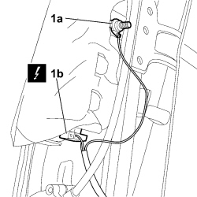
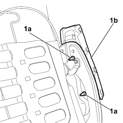

5580C44 FRONT SIDE BAG MODULE (ONE) LH OR RH - R.R
- Path
- Procedures > 55 ELECTRICAL EQUIPMENT > 5580 SPECIAL ACCESSORIES > 5580C AIR BAG SYSTEM > 5580C44 FRONT SIDE BAG MODULE (ONE) LH OR RH - R.R
- Kind
- repair procedure (removal / refitting; the operation number is the code)
- Applies to
- all engines; all production periods
- Interactive page
- https://sloeber94.github.io/elrnDB-fCrm/en/#/194000809
Applies to: all engines; all production periods
 Removing
Removing
 Refitting
Refitting- Disconnect the negative battery terminal.
Description | Connector | |
|---|---|---|
BATTERY |
Op. 7045A10 FRONT SEAT (ONE), LEFT OR RIGHT - R.R.
Op. 7045A25 FRONT SEAT BACKREST LUMBAR ADJUSTMENT KNOB (ONE), LEFT OR RIGHT - R.R.
Op. 7045B12 FRONT SEAT HEAD RESTRAINT, LEFT OR RIGHT - R.R. WITH FRONT SEAT REMOVED
Op. 7045B06 GUIDE BUSH FOR FRONT SEAT HEAD RESTRAINT (ONE), LEFT OR RIGHT - R.R.
Op. 7045D31 FRONT SEAT BACKREST COVER, LEFT OR RIGHT - R.R. WITH SEAT REMOVED
1. Undo the nut (1a) for the earth and disconnect the electrical connection (1b).
Description | Connector | |
|---|---|---|
1b | DRIVER'S SIDE BAG |
Description | Connector | |
|---|---|---|
1b | PASSENGER SIDE BAG |

Applies to: all engines; all production periods
1. Undo the nuts (1a) and remove the side Air Bag (1b).

Applies to: all engines; all production periods
Refitting
RemovingObserve the following precaution.
- Check that the air bag is not damaged.
- Position the air bag and tighten the nuts.
- Connect the electrical connection.
Description | Connector | |
|---|---|---|
DRIVER'S SIDE BAG |
Description | Connector | |
|---|---|---|
PASSENGER SIDE BAG |
- Tighten the earth nut.
- Connect the negative battery terminal.
Description | Connector | |
|---|---|---|
BATTERY |
Topics linked from this page (8)
- 7045A10 FRONT SEAT (ONE), LEFT OR RIGHT - R.R.
- 7045A25 FRONT SEAT BACKREST LUMBAR ADJUSTMENT KNOB (ONE), LEFT OR RIGHT - R.R.
- 7045B06 GUIDE BUSH FOR FRONT SEAT HEAD RESTRAINT (ONE), LEFT OR RIGHT - R.R.
- 7045B12 FRONT SEAT HEAD RESTRAINT, LEFT OR RIGHT - R.R. WITH FRONT SEAT REMOVED
- 7045D31 FRONT SEAT BACKREST COVER, LEFT OR RIGHT - R.R. WITH SEAT REMOVED
- A001 BATTERY
- Q030 DRIVER'S SIDEBAG
- Q031 PASSENGER SIDEBAG